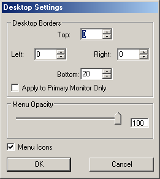
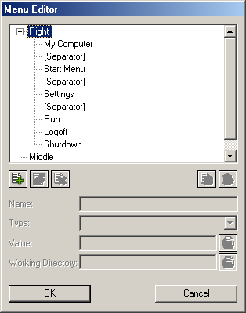

a new menu item, after typing a Name and selecting a Type (e.g. Executable or Internal Command), the user should select a Value and a Working Directory (if appropriate) by using the Browse
a new menu item, after typing a Name and selecting a Type (e.g. Executable or Internal Command), the user should select a Value and a Working Directory (if appropriate) by using the Browse  button and then click on Save
button and then click on Save  or Clear
or Clear | About |
emergeDesktop is the desktop component of Emerge Desktop. It provides the right and mid click menus.
| Configuration |
There are two major components of Emerge Desktop which are dependent on the Desktop: the Desktop Settings which define the active desktop area and general menu options, and the Menu Editor which allows to configure the user defined menus that show up when the user clicks with the Middle or Right mouse button on the desktop.
Desktop Settings
To display the Desktop Settings Configuration dialog the user should click with the right mouse button on the desktop window, and select Settings, Configure. Alternatively the user can type DesktopSettings on the emergeCommand command line.
Defining desktop borders, allows the user to define a desktop area, to which maximized applications are limited, and to have marginal areas to locate applets or simply to have access to a clear background area
The desktop borders, can be applied to all monitors (when using a multimonitor setting) or just to the Primary by unchecking/checking the "Apply to Primary Monitor Only" box
The Menu Opacity setting allows to select the Right and Middle menu's transparency. This can vary from 100 (Opaque) to 20 (Transparent). Transparency can not be set lower than 20 to prevent the menus from becoming unfindable.
Menu Editor
To display the Menu Editor dialog the user should click with the right mouse button on the desktop window, and select Settings, Edit Desktop Menus. Alternatively the user can type DesktopMenuEditor on the emergeCommand command line.
To Add a new menu item, after typing a Name and selecting a Type (e.g. Executable or Internal Command), the user should select a Value and a Working Directory (if appropriate) by using the Browse button and then click on Save or Clear  to start again.
to start again.
Important Note: Folder items can be merged by adding a Pipe (|) between folders. E.g. Start menu is %StartMenu%|%CommonStartMenu%. This is particularly useful for items like Start Menu, Desktop or My Documents by using Emerge Desktop's Internal variables
Menu items displayed in the list box can be Modified  or Deleted
or Deleted  by selecting the item from the list. If at any time the user adds, deletes or modifies incorrectly any menu item, he can undo changes by pressing the Cancel button. This will close the Configure box without saving any modifications since the dialog was opened.
by selecting the item from the list. If at any time the user adds, deletes or modifies incorrectly any menu item, he can undo changes by pressing the Cancel button. This will close the Configure box without saving any modifications since the dialog was opened.
emergeDesktop settings are stored in HKEY_CURRENT_USER\Software\Emerge Desktop\emergeDesktop and consist of the following subkeys:
| Usage |
Right clicking on the desktop will display the 'right click menu'. The default RightMenu includes Windows standard items and Emerge Desktop configuration options.

Middle clicking on the desktop will display the 'middle click menu'. The default MidMenu includes Emerge Desktop's internal commands, namely the running Tasks submenu